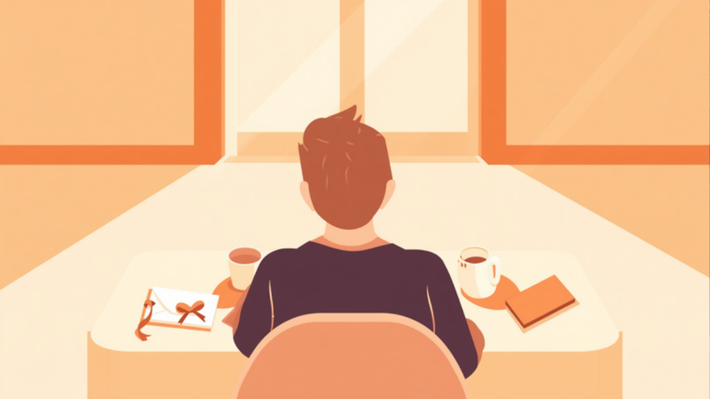
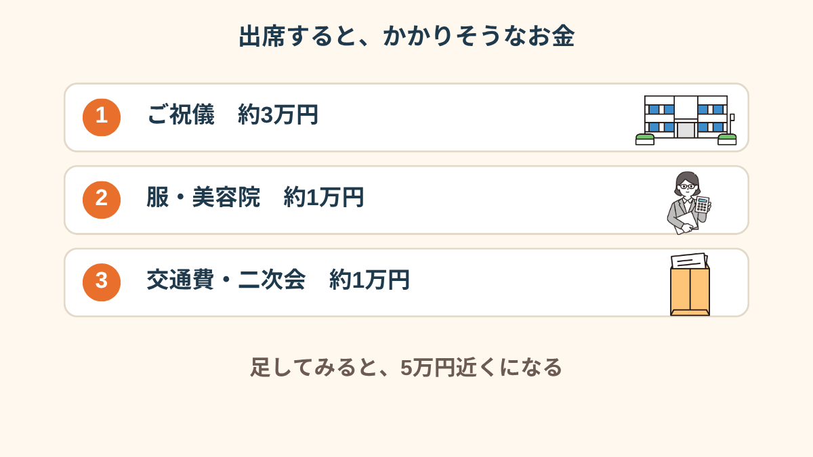
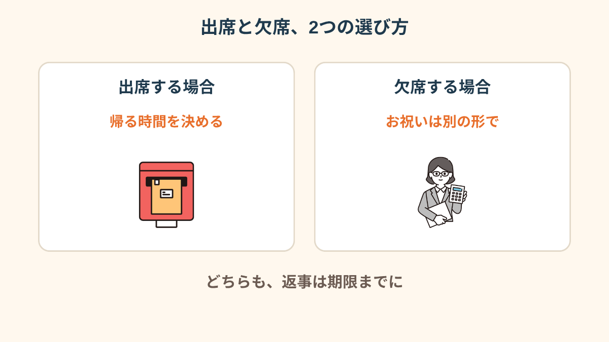
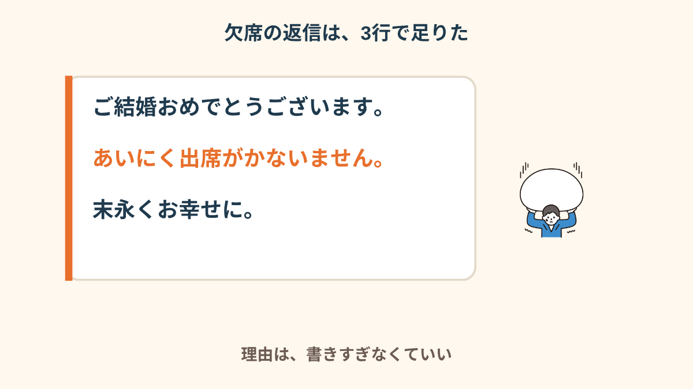
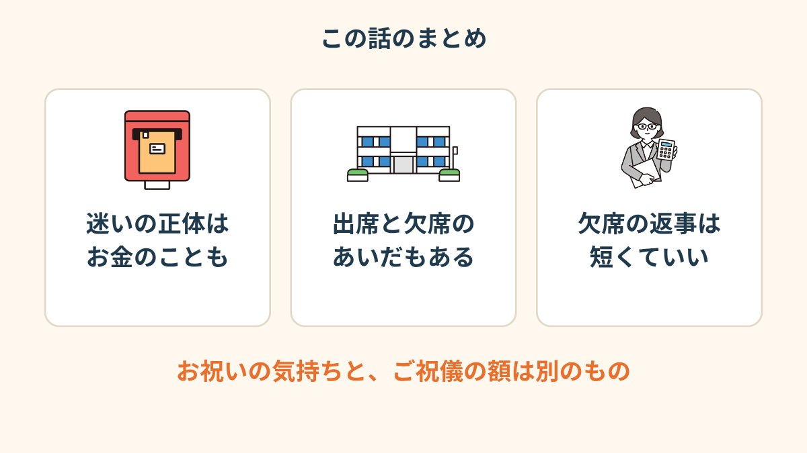
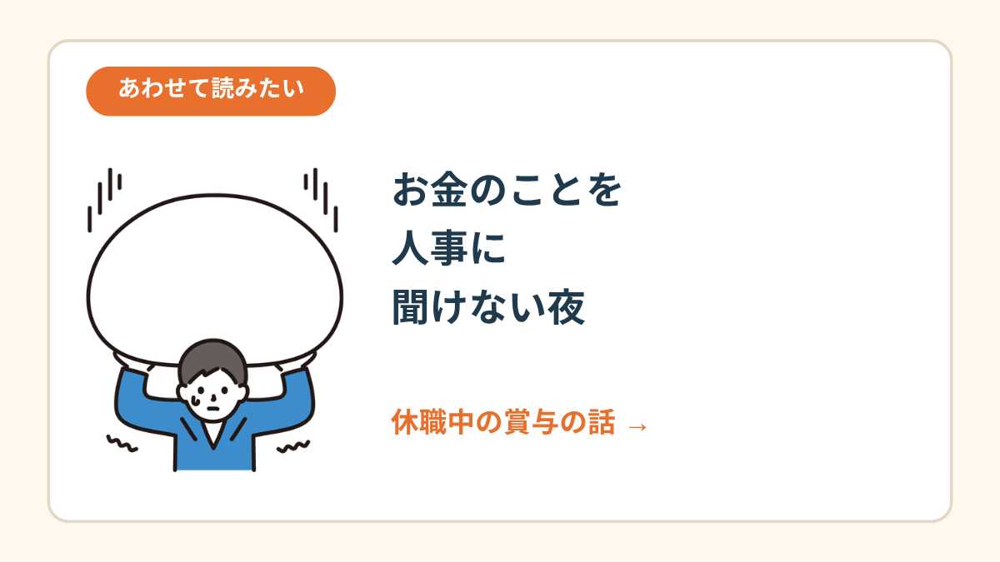

裏を返すと、同じ部署の後輩の名前。
「結婚式の招待状」だと分かった瞬間、うれしさが先に来た。
その3秒後に、財布のことを考えた。
休職して、5ヶ月目だった。
ポストに、白い封筒が入っていた
後輩とは、よく一緒にお昼を食べていました。
休職する前の週も、「先輩、ほんと頼りにしてます」なんて言われていて。
その人からの招待状です。うれしくないわけがない。
なのに、封筒を持った手が、ちょっと冷たくなった。
「出席」に丸をつける自分も、「欠席」に丸をつける自分も、どっちも想像できなくて。
とりあえず、封筒を机の端に置きました。

招待状って、読むだけで気が張りますよね。
「私なんかが行っていいのかな」と「でも、来てほしいって書いてある」が、ずっと交互に来る。
うれしいのに、しんどいという、どっちつかずの感じでした。
「めちゃくちゃうれしかったんですよ。でも、休職してる自分がお祝いの席に行っていいのか分からなくて。封筒を開けたまま、1週間くらい置いてました」
「3万円」が、頭から離れなくなった
夜になって、ネットで「結婚式 ご祝儀」を調べていました。
同僚なら、3万円くらいが多いらしい。
その数字を見た瞬間、通帳アプリを開いていました。
休職中は、給料が出ない月もあって、毎月の支払いがじわじわ重い。
そこに「3万円＋服＋美容院＋交通費」を足すと、あっという間に5万円を超えそうでした。

見積もりを書き出して、ようやく気づきました。
迷っていたのは「行きたくない」からではなく、「払えるか分からない」からだったんです。
「ご祝儀って、休職中でも同じ金額なのかな、って。調べても、収入がないときの答えは見つからなくて、ずっとモヤモヤしてました」
行く、行かない、のあいだにある選び方
選択肢は、出席か欠席の2つだけだと思い込んでいました。
でも、紙に書いてみると、その間にもいくつかあった。

出席するなら、体調と帰る時間を先に決めておく。
欠席するなら、お祝いのメッセージやちょっとした品で、気持ちだけ渡す。
どれも、後輩への「おめでとう」は同じなんだなと思いました。

欠席の返事は、短くていい
私は、欠席にしました。
理由に「体調が」と書くのも、書かないのも、どっちも落ち着かなくて、また夜が潰れそうになった。
だから、短く、これだけにしました。

「ご結婚、おめでとうございます。あいにく出席がかないません。末永くお幸せに。」
本当に、それだけです。
あとから後輩に「全然大丈夫です！また落ち着いたらご飯行きましょう」とメッセージが来て、拍子抜けしました。
「返信はがきの余白に、おめでとうって一言だけ書いて出しました。それで十分だったみたいで、あとで『うれしかったです』って言われました」
返事を出した夜と、そのあとのこと
ポストに返信はがきを入れた帰り道は、ちょっと軽かった。
でも夜になると、「行けばよかったかな」が顔を出しました。
どっちを選んでも、あとから少しは揺れる。そういうものなのかもしれません。
揺れるのは、返事が間違っていたから、ではなく、気持ちが揺れる時期だから。
そう思うことにしたら、少し楽になりました。


休職中の賞与の話 →この記事に、聞いてみたいことはありますか？
「自分の場合はどうなんだろう」と思ったことを、気軽に書いてみてください。いただいた質問は個別にお返事したうえで、匿名で記事にすることがあります。